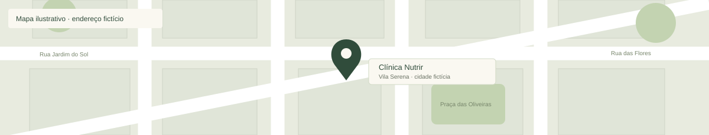

Cuidado individualizado
Uma escuta atenta para entender sua história, suas preferências e sua rotina.
Uma escuta atenta para entender sua história, suas preferências e sua rotina.
Orientações que consideram os desafios e as possibilidades da alimentação no dia a dia.
Um olhar para diferentes fases da vida, respeitando a realidade de cada pessoa.
Modalidades presenciais e online ilustrativas. Vila Serena – SP é uma cidade fictícia.

Um espaço de acolhimento para conversar sobre hábitos, dificuldades e expectativas com a alimentação.

Orientações construídas com você, considerando suas necessidades e seu momento de vida.
Ideias para a rotina da casa, com espaço para preferências, cultura alimentar e refeições compartilhadas.

Estratégias possíveis para organizar as refeições e acompanhar os diferentes momentos do seu dia.
A proposta da Clínica Nutrir é unir ciência e acolhimento para construir uma relação mais tranquila com a alimentação. Cada história é recebida com atenção, respeito e espaço para uma conversa de verdade.
No nosso modelo, Marina Oliveira representa a profissional que acompanha esse caminho. O cuidado começa pela compreensão da rotina, dos hábitos, das preferências e do que é importante para cada pessoa.
A alimentação faz parte de uma vida com trabalho, família, movimento e momentos de descanso. Por isso, as orientações precisam fazer sentido dentro dessa realidade, sem fórmulas prontas ou comparações.
Da organização das refeições ao acompanhamento dos desafios do dia a dia, a ideia é encontrar mudanças possíveis e construir autonomia, respeitando o seu tempo e suas necessidades.
Este espaço será personalizado com a história, a formação e o registro reais da nutricionista. O nome da profissional e os dados da clínica apresentados aqui são fictícios.
Conheça a proposta da NutrirUm atendimento com escuta e sem julgamentos, para compreender os desafios da sua relação com a comida e pensar em passos possíveis.
Orientações que consideram sua história, suas preferências e seus objetivos, com informações claras para apoiar suas escolhas.
Espaço para reavaliar estratégias, conversar sobre a rotina e ajustar o caminho conforme as suas necessidades ao longo do tempo.
Avaliações fictícias · exemplos de apresentação
Gostei da proposta de olhar para a minha rotina antes de pensar nas mudanças. Ter espaço para conversar sobre o que funciona na vida real é o que eu buscava em um acompanhamento.
Ana C. · Relato fictício
A ideia de construir mudanças com calma, respeitando as minhas preferências, combina com o cuidado que procuro. Uma abordagem próxima e sem comparações.
Rafael L. · Relato fictício
O que me chamou a atenção foi pensar nas refeições da família sem complicar ainda mais o dia a dia. Informação clara e respeito à nossa história fazem a diferença.
Beatriz M. · Relato fictício
TreinoAlimentação Receitas
Receitas AlimentaçãoTreinoReceitas
AlimentaçãoTreinoReceitas@nutrir.clinica.exemplo · galeria demonstrativa, sem integração com perfil real
Telefone fictício: (00) 00000-0000 · Nenhum agendamento é realizado neste modelo.
